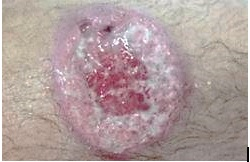
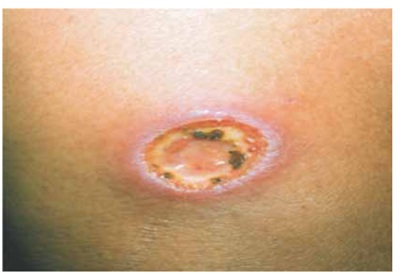

Questão 1 · Outras dermatoses ocupacionais · Tratamento · Epidemiologia · 4000114681A leishmaniose tegumentar é considerada pela Organização Mundial da Saúde como uma das seis mais importantes doenças infecciosas estando distribuída em quatro continentes (Américas, Europa, África e Ásia). I. No Brasil, há registros de leishmaniose tegumentar apenas em algumas das unidades federadas. II. A leishmaniose tegumentar pode ser considerada uma doença ocupacional. III. De forma geral recomenda-se como primeira escolha no tratamento da leishmaniose mucosa o antimoniato de meglumina preferencialmente associado à pentoxifilina em pacientes maiores de 12 anos. Está(ão) correta(s) a(s) afirmativa(s)
A II e III, apenas.
B I, apenas.
C II, apenas.
D I e II, apenas.
Questão 2 · Características gerais · Epidemiologia · Transmissão · 4000083796A leishmaniose tegumentar é uma afecção dermatológica que merece atenção pelo risco de ocorrência de deformidades e também pelo seu envolvimento psicológico, com reflexos no campo social e econômico. É característica da doença:
A a manifestação clínica depende apenas da espécie envolvida. O estado imunológico do indivíduo infectado não interfere na apresentação clínica
B apresenta ampla distribuição com registro de casos em todas as regiões brasileiras podendo ser considerada uma doença ocupacional
C o modo de transmissão é por meio da picada de insetos transmissores infectados ou de pessoa a pessoa
D o período de incubação da doença no ser humano é, em média, de dois a 30 dias
Questão 3 · Leishmaniose tegumentar · 4000006424Homem, 51 anos, pescador, natural e procedente de Autazes (AM), diabético, há 7 meses com úlcera com bordas enduradas na perna esquerda. O exame direto para Leishmania foi negativo. Baseado no caso clínico, a alternativa CORRETA é:
A Na leishmaniose tegumentar americana causada por L. guyanensis, o tratamento de escolha é o antimoniato de meglumina.
B Teste de Montenegro positivo (enduração local de 5 mm confirma diagnóstico de leishmaniose tegumentar americana.
C A biópsia da lesão mostrará áreas de necrose e inúmeros bacilos álcool-ácido resistentes.
D O exame direto negativo não exclui o diagnóstico de leishmaniose tegumentar americana.
Questão 4 · Leishmaniose tegumentar · 4000052644A Leishmaniose é uma das granulomatoses mais comuns que acometem as vias aéreas superiores em nosso meio. Em relação a ela assinale a alternativa correta:
A É transmitida também via transplacentária
B É a causa mais comum de granulomatose laríngea
C Quando atinge a mucosa nasal é classificada com Virchowiana
D É causada por um protozoário
E Tem como sinonímia Blastomicose Sul-americana
Questão 5 · Leishmaniose tegumentar · 4000018195Paciente masculino, 38 anos, agricultor, procedente de Baturité, procura atendimento médico por apresentar, há 4 meses, nódulo eritematoso em perna esquerda de crescimento progressivo. Apesar de ter evoluído para úlcera há 1 semana, a lesão continua sendo assintomática. Nega outras lesões cutâneas. Nega sintomas sistêmicos. Ao exame dermatológico, observa- se úlcera arredondada com 2 cm de diâmetro, localizada no terço médio de região pré-tibial da perna esquerda. A lesão é bem delimitada e possui bordas eritematosas elevadas e rmes, além de fundo recoberto parcialmente por na camada de brina. Diante do diagnóstico provável para o paciente descrito acima, qual a técnica de primeira escolha para a confirmação laboratorial do diagnóstico, nesse caso?
A Sorologia para leishmania, por apresentar alta sensibilidade e especificidade.
B Intradermorreação de Montenegro, por sua elevada sensibilidade em lesões precoces.
C Reação de Polimerase em Cadeia (PCR), por permitir identificação da espécie do parasita.
D Escarificação da lesão para pesquisa direta do parasita, por ser rápido e ter alta sensibilidade.
Questão 6 · Tratamento · 4000081491A leishmaniose tegumentar americana é doença infecciosa da pele e mucosa, cujo agente etiológico é um protozoário do gênero Leishmania. Seu tratamento é um desa o porque as drogas disponíveis apresentam elevada toxicidade, e nenhuma delas é bastante e caz. A recidiva, a falha terapêutica em pacientes imunodeprimidos e a resistência ao tratamento são fatores que motivam a busca de uma droga ideal. Qual é a droga de escolha atualmente para o tratamento das leishmanioses?
A Antimônio (Glucantime).
B Pentamidina.
C Anfotericina B convencional.
D Anfotericina B liposomal
Questão 7 · Tratamento · Características gerais · Manif estações clínicas · 4000055729Paciente masculino, 40 anos de idade, apresentando úlcera arredondada, de bordas eritematosas e elevadas, em moldura, com fundo granuloso e base in ltrada, localizada no terço inferior de perna direita, surgida há cerca de duas semanas, após contato com mata nativa durante pescaria. Com base nessas informações, considere as afirmativas a seguir. I. A doença é causada por um protozoário flagelado transmitido pela picada de insetos hematófagos; II. Lesões localizadas nas mucosas (principalmente nasal) podem surgir meses, ou até mesmo anos, após a cura da lesão cutânea; III. O diagnóstico pode ser feito por exame direto sobre lâmina (coloração de Giemsa) ou por exame histopatológico da lesão cutânea, mas, na forma mucosa, esses exames costumam ser negativos; IV. Esse paciente deve ser tratado com hidroxicloroquina. Havendo alguma contraindicação, como alternativa, pode ser administrada a clofazimina. Assinale a alternativa correta.
A Somente as afirmativas I e II são corretas.
B Somente as afirmativas I e IV são corretas.
C Somente as afirmativas III e IV são corretas.
D Somente as afirmativas I, II e III são corretas.
E Somente as afirmativas II, III e IV são corretas.
Questão 8 · Manif estações clínicas · Diagnóstico · 4000047771Um homem de 45 anos, caminhoneiro, retornando de viagem para o Norte do País, refere o aparecimento há 15 dias, de lesão ulcerada , pouco dolorosa, em braço direito. Após procurar a UBS fez uso de Cefalexina por 7 dias, sem melhora do quadro. O paciente nega febre ou qualquer sintoma geral. Ao exame físico, no Centro de Especialidades, observa-se uma lesão de formato arredondado, de base eritematosa, in ltrada e de consistência rme, bordas bem delimitadas e elevadas, fundo avermelhado e granulações grosseiras em face extensora de membros superior direito. O restante do exame está sem, alterações. O diagnóstico clínico mais provável é:
A Hanseníase
B Foneutrismo.
C Leishmaniose.
D Carcinoma Espinocelular.
E Erucismo.
Questão 9 · Leishmaniose tegumentar · 4000017463Sobre a leishmaniose tegumentar americana, assinale a alternativa correta.
A Um dos principais diagnósticos diferenciais é a esporotricose.
B O diagnóstico laboratorial em área endêmica é confirmado pela intradermoreação de Montenegro.
C A taxa de resposta aos antimoniais pentavelentes é baixa.
D O critério de cura é a ausência de lesão cutânea após 30 dias do término do tratamento.
Questão 10 · Manif estações clínicas · Diagnóstico · 4000102905Homem, 45 anos, agricultor, referiu lesão papulosa no membro superior há três meses, que evoluiu para formação de úlcera. Nega febre ou perda de peso. Exame físico: sem outras lesões cutâneas; linfonodos de 1,5 a 2 cm de diâmetro na cadeia axilar ipsilateral. Qual é o achado laboratorial mais provável?

A Estruturas filamentosas no tecido.
B Bacilos álcool-ácido resistentes no esfregaço.
C Bacilos Gram-negativos no esfregaço.
D Formas amastigotas no tecido.
Questão 11 · Tratamento · 4000044213Analisando os itens abaixo, são efeitos colaterais do glucantime: I. Anormalidade no ECG; II. Pancreatite; III. Uveítes; IV. Artralgias; V. Impotência. A alternativa que contém todas as afirmativas corretas é:
A I, II e V
B III, IV e V
C I, II e IV
D I, II, III, IV e V
E I
Questão 14 · Manif estações clínicas · Diagnóstico · 4000118094Na leishmaniose tegumentar, a reação de Montenegro pode ser negativa:
A Na forma difusa.
B Na forma linfangítica.
C Na forma verrucosa.
D Nos doentes em tratamento com meglumina.
Questão 15 · Tratamento · Manif estações clínicas · Diagnóstico · 4000039010Mulher, 29 anos, apresenta ferimento em úlcera no nariz que se iniciou pequena, arredondada, profunda e com borda avermelhada, crescendo progressivamente. Não teve redução com o uso de medicamentos cicatrizantes comuns. Refere ter visitado Santarém e arredores há cerca de três meses. Após suspeita, houve identi cação do parasito em esfregaço de raspadura da lesão e teste de Montenegro positivo. O exame a ser realizado e o tratamento de primeira escolha é:
A Beta-hC G; sulfametoxazol 4% + trimetoprima 0,8% por 30 dias.
B RX de tórax; amoxicilina / ácido clavulânico por 15 dias.
C Beta-hC G; antimoniato-N-metil-glucamina por 20 dias.
D Beta-hC G; anfotericina B por 3 meses.
Questão 16 · Tratamento · 4000110442Mulher de 29 anos, apresenta ferimento em úlcera no nariz que se iniciou pequena, arredondada, profunda e com borda avermelhada, crescendo progressivamente. Não teve redução com o uso de medicamento cicatrizantes comuns. Refere ter visitado Santarém e arredores há cerca de três meses. Após suspeita houve identi cação do parasito em esfregaço de raspadura da lesão e teste de Montenegro positivo. O exame a ser realizado e o tratamento de primeira escolha é:
A B-hCG / Sufametoxasol 4% + Trimetropina 0,8% 30 dias.
B RX tórax / Amoxicilina / A.C. Clavulanico 15 dias.
C B-hCG / Antimoniato-N-metil-glucamina por 20 dias.
D B-hCG / anfotericina B por 3 meses.
Questão 17 · Manif estações clínicas · 4000037724A leishmaniose tegumentar é doença endêmica em grande parte do Brasil. Quanto aos aspectos clínicos, analise as afirmativas. I - A Leishmaniose Cutânea (LC) pode preceder a Leishmaniose Mucosa (LM). II - Como apresentação inicial da LM em sua forma tardia, têm-se frequentemente lesões de mucosa nasal assim como da mucosa oral. III - A LC é frequentemente representada por lesões ulceradas únicas ou múltiplas pouco dolorosas e com granulações ao fundo. Está correto o que se afirma em:
A I, II e III.
B I e II, apenas
C III, apenas.
D I e III, apenas.
Questão 18 · Manif estações clínicas · 4000085224Homem, trabalhador rural, relata aparecimento de lesão ulcerada em coxa, com posterior surgimento de lesões satélites, e lesões que ascendem no membro inferior a partir da lesão inicial, seguindo o trajeto linfático. Palpa-se linfoadenomegalia inguinal unilateral. As lesões possuem centro necrótico e granular, com bordas elevadas e in ltradas. Relata que das lesões eventualmente escorre líquido amarelo citrino, o que o paciente relatou como "ferida que chora". Radiogra a de tórax e exame de cavidade oral são normais. (VER IMAGEM) Observe a foto abaixo e responda: o quadro é compatível com:

A Paracoccidioidomicose.
B Histoplasmose.
C Leishmaniose tegumentar americana.
D Calazar.
E Doença de Lyme.
Questão 19 · Manif estações clínicas · 4000037451Lesão cutânea da Leishmaniose cutâneomucosa pode ser diagnosticada clinicamente, com base nos seguintes aspectos:
A Evolução inferior a 2 semanas, dolorosa, base amolecida, bordas planas e indefinidas, fundo exudativo, tipicamente em áreas expostas.
B Evolução inferior a 1 semana, indolor, base amolecida, bordas elevadas e indefinidas, fundo necrótico, tipicamente na face.
C Evolução superior a 4 semanas, indolor, base endurecida, bordas elevadas e definidas, fundo seco, tipicamente em áreas expostas.
D Evolução superior a 4 semanas, dolorosa, base endurecida, bordas vegetantes e necróticas, fundo hemorrágico com infiltração de planos profundos, tipicamente nas pernas.
E Evolução inferior a 1 semana, indolor, base endurecida, bordas planas com vesículas, fundo exudativo, tipicamente plantar.
Questão 20 · Manif estações clínicas · Diagnóstico · 4000112693Homem, 38 anos de idade, militar, durante período de treinamento no Amazonas, notou surgimento de lesão pustulosa, que progressivamente evoluiu para úlcera, visualizada na figura abaixo. A investigação laboratorial e a hipótese diagnóstica são:

A O esfregaço dérmico permite a visualização de protozoários por coloração Giemsa; reação de Montenegro; leishmaniose tegumentar.
B O esfregaço dérmico permite a visualização de bacilos álcool-ácido resistentes por Fite-Faraco; PPD; micobacteriose atípica.
C O exame bacteriológico permite a identificação de bactérias Gram-negativas; ASO; ectima.
D O esfregaço dérmico permite a visualização de estruturas fúngicas por coloração pela prata; teste intradérmico para fungos; esporotricose.
Questão 21 · Manif estações clínicas · Diagnóstico · 4000111931Na leishmaniose tegumentar, a reação de Montenegro pode ser negativa:
A Nos doentes em tratamento com meglumina.
B Na forma linfangítica.
C Na forma verrucosa.
D Na forma difusa.
E Nas formas de longa evolução.
Questão 22 · Diagnóstico · 4000017815Paciente de 42 anos, sexo masculino, procedente da área rural de Niquelândia, há 30 dias apresentava, no tornozelo direito, uma lesão ulcerada, medindo 5 cm de diâmetro. A intradermorreação de Montenegro era negativa. Nesse caso:
A a intradermorreação de Montenegro negativa afasta o diagnóstico de Leishmaniose Tegumentar Americana.
B a intradermorreação de Montenegro > 5 mm confirma o diagnóstico de Leishmaniose Tegumentar Americana.
C a confirmação do diagnóstico de Leishmaniose Tegumentar Americana depende do encontro de formas amastigotas no exame parasitológico.
D a intradermorreação de Montenegro negativa associada à reação de imunofluorescência indireta negativa afasta o diagnóstico de Leishmaniose Tegumentar Americana.
Questão 23 · Manif estações clínicas · 4000078342Um indivíduo em bom estado geral procurou a unidade de saúde de um município do interior do Paraná, por apresentar duas lesões cutâneas ulceradas em antebraço direito. Refere que as mesmas iniciaram-se há três meses e não cicatrizaram com o uso de pomadas de antibiótico. De antecedentes, refere ter trabalhado na construção do gasoduto transportador de gás boliviano, quando este cruzava região central do Paraná. Ao exame as lesões tinham bordos elevados, eritematosos e com secreção seropurulenta em seu interior. Qual a primeira hipótese diagnóstica a ser formulada?
A Impetigo estafilococico
B Ectima gangrenoso
C Leishmaniose tegumentar americana
D Esporotricose fixa cutânea
E Tuberculose cutânea
Questão 24 · Agente etiológico · 4000022337Entre as grandes endemias que ocorrem no Brasil, estão a malária, a dengue, a doença de Chagas, as leishmanioses, a hanseníase e a tuberculose. Acerca dessas doenças, julgue o item a seguir: O controle da leishmaniose tegumentar baseia-se no combate ao seu principal vetor no Brasil, a Lutzomyia longipalpis. Respostas: 1 12 23
A Certo.
B Errado.